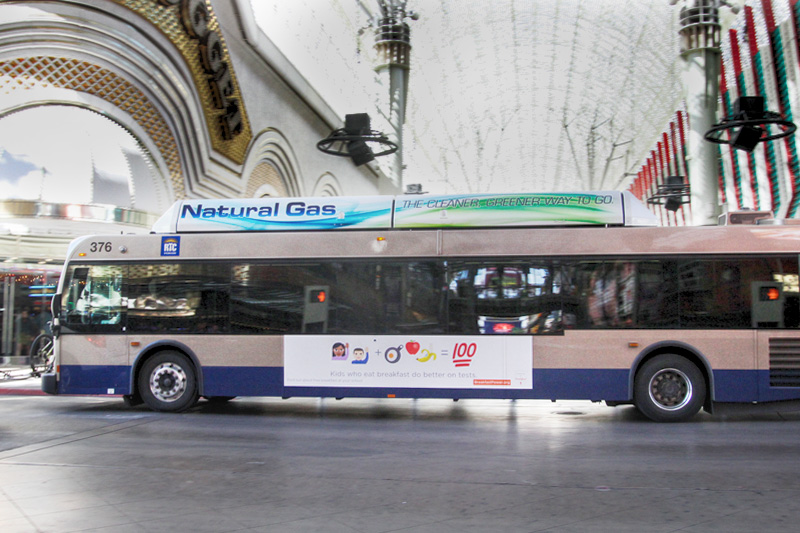
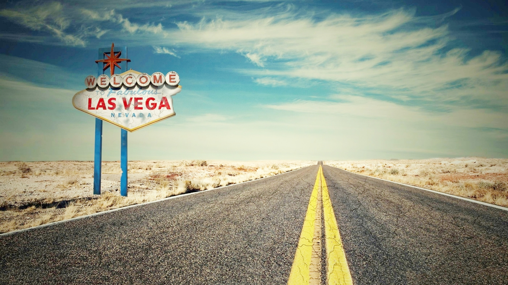

PRO TIP: Getting from the airport to your hotel
With so much excitement and energy where arriving in Vegas it can be easy to just jump in a cab and head to your hotel. But that's actually the worst option for transportation value. For only $2 you can ride the WAX bus (depending on your departure point – more on this further down). As per the shuttles, which are frequent and operate through the night, they still provide a great & affordable option if you traveled solo or with just one other person; if I travel in group of 4 or 5 people a large Uber may be a cheaper and quicker option. Besides the WAX bus, for one or two people the shuttle provides an affordable alternative to the ever-increasing taxi fares (with ever-increasing starting fixed rate, which is simply a rip-off – and of course the expectation of a large tip, not sure why to this date, unlike pretty much any other cab service in the rest of the world). These shuttles will take you to any main resort, even off the Strip, and they are very important for those not wanting to be ripped off by taxis the second they arrive in Las Vegas. Don't ride in taxis ever when in Vegas.
Driving To Vegas
Considering a weekend getaway to Vegas? After a rough week, there's nothing like packing your bags, channeling your inner Elvis or showgirl, and heading to Sin City for glitz and good times! According to statistics compiled annually by the Las Vegas Convention and Visitors Authority, approximately 26 percent of tourists who come to Las Vegas are from Southern California. If you're considering making the drive, here are a few things you should know.
Map your route out in advance. Depending on what part of the country you're from, you're likely to be driving between 100-500 miles. Beyond that it makes more sense to Fly. Be aware that it's not a particularly scenic drive. from most directions you'll be llooking out at the open desert almost the entire way.
Traffic Typically the average daily auto traffic into Vegas can usually be less in the evenings. Pertaining to weekend trips, most visitors tend to leave between Friday morning and very late Friday night, and then everyone heads back to between noon and 8 p.m. on Sunday. If you can take Thursday or Monday off and travel then, you're guaranteed to encounter a lot less traffic. (Note: If you're coming to Vegas on a holiday weekend, be prepared for the longest road trip of your life. It's not uncommon for the drive to Vegas to take much longer both there and back.
Gas and food stops Know your mileage and try not to let the gas level fall below one-quarter of a tank. This may seem trivial, but there are a couple of sections of road coming in from all directions without gas stations for quite some time. Mark out your stops in advance based on larger cities and better places to stop.
Don't speed Although the I-15 can be long, flat and tedious (especially the stretch through the Mojave Desert), fight your need for speed. The California Highway Patrol and Nevada Highway Patrol are always ready to hand out tickets for speeding. Expect to see strict enforcement of the speed limit there most of the way.
Water Nevada is a desert so staying hydrated is a must. Summer temperatures in Las Vegas sometimes reach higher than 115 degrees. With that in mind, carry lots of water -- for you and your passengers as well as for your radiator in case of overheating. A gallon per person and an extra gallon for the car is a good rule of thumb.
Traveling with childrenIf you're looking to avoid traffic and drive in peace, consider making your journey at night. When kids have nodded off, you'll be able to log some serious miles without bathroom and snack stops or the whiny “When will we get there?” question. If you travel by day, a portable DVD player will be a godsend. It's also a good idea to plan some “I spy” spotter games and storytelling.
Ways to pass the time There's nothing better to get you in the Sin City mood than a collection of Vegas-themed songs for the road. Also, be sure to bring information about Las Vegas with you. You can start to make plans. If you have great phone or wireless service, you can even make room reservations, view show tickets, get VIP nighclub passes, book sightseeing tours and find wonderful last-minute deals at here at VDF.
Service your car Due for an oil change? Need coolant added? Tires low on air pressure? As the cliché goes, an ounce of prevention is worth a pound of cure. Or, to put it more clearly, get your vehicle checked out and thoroughly serviced before you drive to Las Vegas. You should bring basic repair essentials with you to handle a flat tire. Jumper cables, a flashlight and warning devices (like flares or reflective gear) are also recommended.
With all of these things in mind, have a safe trip and don't forget to have fun. After all, you are heading to Vegas on vacation!
Transportation Deals
Getting around in Las Vegas can be accomplished with relative ease once you know which method of transport is best suited to you. Below are the multitude of transportation options available and our best picks for saving money. Once you arrive in Vegas you will first need to get outside to find transportation options to your hotel. Our #1 pick is always is riding the WAX bus. For only $2 (you can buy tickets at locations in the airport or have exact change and pay on the bus). The WAX bus stop at Terminal 1 is located on Level Zero. From baggage claim, take the elevator or escalator down one level. Exit the terminal building and proceed across the pedestrian crosswalk. Veer right to the covered RTC bus stop.
Airport Shuttle
Several shuttle companies operate from McCarren International Airport to the Las Vegas strip, downtown Las Vegas, Boulder Highway and the outlying hotels. Travel arrangements can be made outside of the baggage claim area for one-way or round trip transport. Round trip fares are slightly less than double the one-way fare. Approximate round trip fares per person are as follows:
- Strip hotels--$8.00
- Downtown hotels--$10.00
- Off strip hotels--$13.50
- Reservations are recommended for timely return to airport
Limousine Service
Prices for limousine service in Las Vegas range between $35/hr for a basic limo up to $80/hr for a super-stretch limo. There is nothing like walking out of a limo and going inside a top casino in Vegas. However with the rise of Internet gambling some people prefer to play in the famous live dealer online casinos while enjoying their spa vacation in a Vegas hotel. Limousines also offer shuttle service between McCarren Airport and Strip hotels from about $4.00 per person and downtown hotels from about $5.00 per person, be aware that for this price it is more likely that you will be placed in a shuttle bus or van operated by the limo company. Prices for limousine service in Las Vegas range between $35/hr for a basic limo up to $80/hr for a super-stretch limo. Limousines also offer shuttle service between McCarren Airport and Strip hotels from about $4.00 per person and downtown hotels from about $5.00 per person, be aware that for this price it is more likely that you will be placed in a shuttle bus or van operated by the limo company.
A fairly new option exist to pre-arrange for a limo to pick you up and/or drop you off at McCarren Airport, or anywhere else you may require a limo to take you (especially helpful if you are getting married in Las Vegas or attending a wedding during your stay). There is no cost or obligation on your part if you submit your information to have several companies bid on providing you with limo service.
If you are coming to Vegas with a large group to attend a corporate event or your best friend's bachelor / bachelorette party you will need a large vehicle to accommodate high number of passenger. VegasVIPLimo.com features super stretch SUV limousine up to 45 people from Hummer H2 to party bus
Taxi Services
Taxi fare in Las Vegas is governed by the Nevada Taxicab Authority and as such all fares between 16 companies operating in the Las Vegas valley will be the same. Once you enter a taxi the meter will start at $3.20. If the taximeter senses that the taxicab is moving less than 8-12 MPH, (as is the case when stuck in traffic) the taximeter will assess a charge of $.25 (twenty-five cents) every 41 seconds which equals $22/hour. While travelling at speeds above 8-12 MPH the rate is $2.00 per mile which is broken down into 1/8th of mile segments of $0.25 each. There is also an additional $1.20 fee for all trips that begin at McCarran Airport, this will result in trips to your hotel from the airport costing more than your return trip to the airport. Once the taximeter senses that the taxicab is moving at a speed greater than 8-12 MPH the fare calculates on the actual distance travelled. To recap:
- First 1/8th of a mile = $3.20
- Each additional mile = $0.25
- Waiting time = $22.00 per hour
- McCarran Airport pickup fee = $1.20
- From McCarren Airport the approximate fares are as follows:
- South Strip (Luxor, Mandalay, Tropicana)--$9.50-$12.00
- Center Strip (Caesars, Mirage, Harrah's)--$12.00-$15.00
- Sahara/Stratosphere--$13.00-$17.00
- Downtown Area--$17.00-$21.00
- *Note-The above rates are per car load (up to 5 passengers) not per person. Drivers are not allowed to alter from the most direct route without prior approval from the passengers.
Car Rentals
Cab fares add up quickly, buses are slow and the strip is long if you are walking a lot and planning day trips away from the city then a rental car is recommended.Having a car also gets you access to several other casinos off strip where the gambling is great and there are killer coupons for food and gambling. The major car rental companies have booths at McCarren Airport but we suggest that you book your car before you leave home. Doing some reasearch can really save you some money on your rental. Having a car at your disposal will give you more time to enjoy your Las Vegas vacation without transportation worries but beware, many casinos now charge for parking.
City Buses
The citizens area transit or CAT is the Las Vegas public transit system. The 2 routes that most Las Vegas visitors will be concerned with are the #301 and #302 which both run the Strip from the south to Fremont street. The 301 stops at every stop along the strip while the 302 is the express bus and stops at fewer locations. Fare to use the CAT bus sytem is $2.00 with exact fare required, drivers will not make change for you.
Trolleys
The trolley bus travels from The Stratosphere to the South Strip area, it does not travel to Fremont Street. Trolley bus fare is $1.50 exact fare only with hours of operation between 9:30am to 2:00am on a 20 minute schedule. The trolley bus does serve the purpose of transport and is generally less crowded than the CAT buses but be forewarned, has uncomfortable wooden seats (nostalgic I suppose) and stops at every major hotel along the strip making transport slower.
Las Vegas Monorail
The Las Vegas monorail runs from the MGM Grand Hotel to Sahara Ave. The Las Vegas Monorail operates 7 days a week from 7:00am to 2:am Monday - Thursday and until 3:00am Friday - Sunday, Each car on the Monorail holds 72 riders seated and 152 riders standing with the approx. time to ride from one end of the 4 mile long Las Vegas strip is being 14 to 16 minutes, depending on the speed of boarding and unloading passengers.
The monorail tickets can be purchased at vending machines located inside each station and at station hotel properties and online. Monorail ticket prices are as follows: Normal Fare Rates:
- 1 ride pass $5.00
- 2 ride pass $9
- 10 ride pass $35
- 1 Day pass $8 (Summer Special)
- 3 Day pass $40
- Children 5 and under FREE
For the current status of the monorail or to purchase advices tickets please visit the Las Vegas monorail website
1 ride pass is good for 1 entry to monorail system
10 ride pass good for 10 entrances, any station(s). This pass is valid for 1 year from first use.
1 day pass offers unlimited entrances, any station(s) is valid for 24 hour period from first use.
3 day pass offers unlimited entrances, any station(s) is valid for 72 hour period from first use. Stations located along the monorail system are:
- MGM Grand station
- Bally's - Paris station
- Flamingo - Caesars Palace station
- Harrah's - Imperial Palace station
- Las Vegas Convention Center station
- Las Vegas Hilton station
- Sahara station
Free Shuttles
- Barbary Coast, Gold Coast, Orleans shuttle - Shuttle bus runs every 20-25 minutes to each of the above mentioned casinos between 9:30a.m. and Midnight. Catch the Barbary shuttle at the side entrance on Flamingo Road. Use the Barbary Coast to the Gold Coast shuttle and you can walk to the Rio which is located beside the Gold Coast.
- Harrah's to The Rio - Shuttles run on an approximate 30 minute schedule to each property between the hours of 10 a.m and 1a.m. Loading at the Rio is at the side entrance, loading at Harrah's is at the entrance at rear of casino next to the check-in counter.
- Sam's Town shuttle - Shuttles run from Sam's Town on the Boulder Highway to several Las Vegas locations every 45 to 60 minutes between the hours of 8 a.m and 11:30 p.m. depending on which route you are using. Shuttle run from Sam's Town to the following properties, Stardust, Fremont, California, Bourbon Street, San Remo and Harrah's. Although the Sam's Town web site says that a room key may be required we have never heard of anyone being asked to show a key.
- Hard Rock shuttle - The Hard Rock shuttle picks up passengers about once per hour between 10 a.m. and 7p.m. Shuttle stops at the Forum Shops at 10 past the hour, Fashion show Mall at 15 minutes past the hour and the Stardust at 20 minutes past the hour. The friendly Hard Rock drivers will stop and pick you up if you flag them down between stops.
- The Palms shuttle - The Palms hotel offers a shuttle service runs on a loop to the fashion show mall, from there to Caesars Forum shops, then it's off to the Aladdin passage shops before returning back to the Palms. Schedule is as follows:
- Departs The Palms (west entrance near sports book) at 10 a.m., 11:30 a.m., 2 p.m., 3:30 p.m. and 5 p.m.
- Departs Fashion Show Mall (Saks 5th Ave entrance) at 10:15 a.m., 11:45 a.m., 2:15 p.m., 3:45 p.m. and 5:15 p.m.
- Departs Caesars Forum Shops (downstairs valet entrance) at 10:30 a.m., noon, 2:30 p.m., 4 p.m. and 5:30 p.m.
- Departs Aladdin Desert Passage (downstairs valet entrance) at 10:45 a.m., 12:15 p.m., 2:45 p.m., 4:15 p.m. and 5:45 p.m.
- Green Valley Ranch Shuttle Service - Green Valley Ranch offers a complimentary shuttle service to and from McCarran Airport and the Las Vegas Strip. This is a white, ten-passenger van with the Green Valley Ranch logo. It is available to the first ten people at each destination.
- McCarran Airport to Green Valley Ranch - The shuttle picks up and drops off guests at the Zero Level. The Zero Level is located down the escalators behind the Baggage Claim Information Desk. The shuttle will pick up and drop off across the driveway (to the right) across from stalls #21 and #22.
- Green Valley Ranch to the Las Vegas Strip - The shuttle picks up and drops off guests at the Mandalay Bay Tour & Travel Lobby
- All these shuttles are a free service
Free Trams
- Tram that runs from Bellagio to the Monte Carlo hotel runs every 10 minutes 24 hours a day offers indoor boarding platforms.
- Excalibur to Mandalay Bay tram operates 24 hours a day with non-stop service on the southbound trip. The same tram on the return (northbound) trip from Mandalay Bay to Excalibur provides a stop at the Luxor for those wishing to visit there.
Walking and Your Safety
The Las Vegas Strip is over 4 miles long from one end to the other, walking the strip will take considerable time. If you decide to try walking here are a few tips:
- At night stay on the Strip and do not walk alone if you can avoid it. Las Vegas is, generally speaking, a safe city but like any other is not excluded from crime.
- Wear comfortable, good fitting shoes.
- Summer months are very hot, during daytime walks take bottled water with you and stop often at the casinos to get a fresh bottle.
- Obey walk signals at traffic lights, many tourists are hit by cars every week driven by other tourists that are looking at the sights.
- When walking on the Las Vegas Strip you will be handed pamplets and magazines with pictures or ads for sex that may be objectionable to you. Do not hold out your hand to take them, the people that are giving them away will not bother or harass you in any way if you ignore them.
PRO TIP:
Track you daily steps with your phone to see just how much you walked each day! Its not uncommon to log well over 20,000 steps in a day. Our personnel record is 28,500 Steps. Who needs the gym when your knocking out mile after to mile with just your own two feet!

Use Lyft and Uber from the Airport
Lyft and Uber are the fastest way to get to your hotel while saving money compared to a taxi. VDF recommends always using ride sharing in Vegas instead of a Taxi. Ride sharing is generally very convenient and always more affordable.
Terminal 1Uber/Lyft Pickup: After baggage claim, take the elevator near door #2 up to the second level. You will then need to cross the pedestrian bridge to Terminal 1 parking garage. Pickup is there.
Ride Share Pick up from Terminal 3
The Ride Share pick up is located on the Valet level of the Terminal 3 parking garage
- From Baggage Claim, take the elevator near door #52, #54 or #56 up to level 1.
- Cross the pedestrian bridge on level 1 to the Terminal 3 Parking Garage.
Walking the Strip
If your feeling crazy and want to try walking the length of the strip be prepared. although it never appears to be that far away, Vegas casinos are huge and the walk is always longer then it looks. Its approx. 4.2 miles from one end of the strip to the other. Going into and exploring individual casinos can add many more miles to your walking tour.
Find the Shortest Route
In Las Vegas just finding your way out of the Hotel or Casino can be a task. Walk out the wrong end of the casino and you could be adding 1/2 mile to your walk. Its always best to either know exactly where to go or simply ask a hotel employee for the best way to get to wherever you're going. Yes guys.... that means you too!!
Proper footwear
If your planning on logging a lot of your travel while in Vegas via walking then make sure you bring your most comfortable shoes. We recommend sneakers those long days on your feet but comfy and classier dress shoes can also do the trick. Having proper footwear can make all the difference in your trip. One huge blister on your foot and you will never forget again.
Parking Parking FREE PARKING
Did you know: Some Strip resorts now charge for parking. Aria, New York-New York, Vdara, MGM Grand and others now charge visitors for self- and valet parking.
But you can still find free parking along the Strip, if you know where to go.
- Circus-Circus - Self-parking is free, but valet is not. Expect to pay $10 for up to four hours, and $15 for four to 24 hours.
- The Cosmopolitan - Self and valet parking are free, but only until May 16. After that, you get one free hour of self-parking and will pay $7 for up to four hours and $10 for four to 24 hours. And yes, that applies to hotel guests too.
- SLS - All parking is free here. Plus, the hotel is the northernmost stop for the Las Vegas Monorail if you want to use public transit.
- Stratosphere - The Stratosphere Casino Hotel in Las Vegas, Nevada. This iconic spot offers free self- and valet parking.
- Treasure Island - Not only does this independently owned hotel-casino not charge guests, but it intends to begin advertising as a fee-free parking destination on the Strip.
- Trump International Hotel - Only valet parking is offered, but it’s complimentary.
- The Venetian and the Palazzo - The Palazzo and the Venetian, right, offer complimentary self- and valet parking. These sister properties are the only remaining mega-resorts that don’t charge for parking. Hotel officials say they have no plans to start charging either.
- Wynn Las Vegas - Self-parking is free, but Wynn and Encore charge for valet services.
- Shopping centers - Parking is free at several shopping centers along the Strip, including The Shops at Mandalay Bay (between Mandalay Bay and the Luxor), the Shops at Crystals (in front of Aria and Vdara) and Fashion Show Mall (across the street from Wynn-Encore).
Who Charges to Park?
The MGM Grand is one of the casino properties in Las Vegas that charges customers for parking.
Caesars Entertainment and MGM Resorts have implemented fees for self-parking and valet at a broad swath of their properties along Las Vegas Boulevard.
Want to pop into Bellagio or Aria for a meal or a show? They chrage $20 for up to four hours in valet parking.
If you’re staying overnight, paying $25 for parking probably makes sense. Even with the increases, it’s still cheaper to valet park in Vegas than in other big cities, such as New York and San Francisco.. but its still sucks.
Need a Wheelchair or Mobility Scooter while in Vegas?
With so much walking and so much to see some people may want to consider renting a portable scooter to get them around with less toll on their bodies. Here is our pick for a great deal on a scooter rental. Las Vegas Scooters Less then $100 for a week rental.